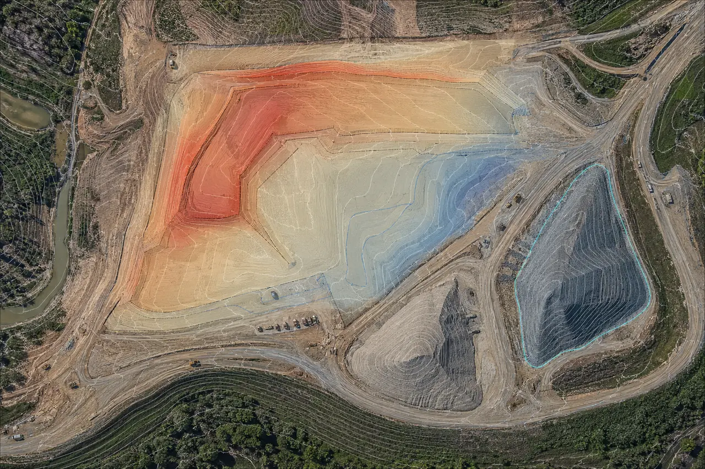

SAN ANTONIO • TEXAS • CONSTRUCTION SUPPORT
Know what changed
between site visits.
Wise Geospatial helps construction teams compare project surfaces, track stockpiles, and organize earthwork quantity documentation from suitable drone data, point clouds, and existing project files.
Earthwork progressStockpile volumesSan Antonio + Texas

QUANTITY SUPPORT • DEMONSTRATIONSurface comparisons organized for project review.
SURFACE COMPARISONSCUT / FILL SUMMARIESSTOCKPILE VOLUMESREPEATABLE REPORTING
A DEFINED MONTHLY WORK PACKAGE
Turn site data into a consistent quantity record.
Agree on the measurement area, reference surfaces, units, dates, and review criteria first. Then each reporting cycle can follow the same documented workflow.
01Compare earthwork progress
Compare suitable dated surfaces against an agreed baseline or design reference to summarize measured changes within a defined project area.
- Cut/fill summaries to an agreed reference
- Progress snapshots across reporting dates
- Optional cross-sections at specified spacing, such as 50 feet
02Track stockpiles and materials
Document stockpile boundaries and calculate volume from the selected base surface and measurement method.
- Volume table by pile or material area
- Annotated aerial or surface exhibits
- Consistent naming and date comparisons
03Support pay-application review
Prepare quantity exhibits and source notes that help project teams review progress and assemble pay-application documentation.
- Quantity summaries and measurement dates
- Method and input-data notes
- Files packaged for your review workflow
WHAT TO SEND
Start with one site and one reporting cycle.
A small pilot helps confirm that the source data, reference surface, and requested output line up before a recurring schedule is set.
Plan a pilot quantity check →
01Project area and datesSite boundary or limits, measurement date(s), reporting period, and the areas or stockpiles to include.
02Reference surface and unitsExisting or design surface, control/reference information as applicable, coordinate system, vertical datum, and units.
03Source data and expectationsDrone imagery, point cloud, survey or machine data, desired outputs, acceptance criteria, and any sample report.
04Review and scheduleDue date, preferred file formats, project contact, and how quantity results should be reviewed and approved.
SAMPLE VISUAL
See the format before you scope the work.
The image below is a representative demonstration of the types of surface and volume views that can help communicate a quantity check.
DEMONSTRATION ONLYEarthwork + stockpile view
SAMPLE OUTPUT COMPONENTS
One clear view of the measurement and its context.
A scoped package may combine a quantity table with dated imagery or surface exhibits, cross-sections, and concise notes about the inputs and method used.
- Every graphic is labeled with its measurement date and reference
- Volumes use agreed limits, units, and base/reference surfaces
- Representative visuals are not client project claims
Describe your project data →Demonstration data: This visualization is illustrative and does not represent a completed client assignment, certified survey, or promised accuracy.
COMMON QUESTIONS
Construction quantity tracking FAQ.
Can quantity tracking support a pay application?It can provide quantity exhibits and source notes for project-team review. The owner, contractor, engineer, or other responsible party applies the contract requirements and approves submitted quantities.
Can you work from data our team already has?Often, yes. Share a representative point cloud, drone dataset, surface, or other spatial input with its coordinate system, units, dates, and intended use so suitability can be reviewed.
How often can quantities be updated?Monthly, milestone-based, or another agreed interval can be scoped around data availability, site conditions, and the project review schedule.
Does this replace a licensed land survey?No. Quantity documentation and spatial-data processing do not independently provide regulated land surveying or engineering. Certified or regulated work requires the appropriate licensed structure and review.
CLEAR SERVICE BOUNDARIES
Documentation for review by your project team.
Wise Geospatial provides technical spatial-data processing and quantity documentation from available inputs and agreed project criteria. Deliverables support project review and do not replace contract administration, owner approval, or licensed professional judgment.
Where a project requires certified accuracy, boundary determination, engineering design, or regulated survey deliverables, work must be performed within the appropriate licensed structure and required review process.
START WITH A PILOT
Scope one useful quantity check.
Tell us the project location, available data, reference surface, measurement date, and the quantity decision your team needs to make. We’ll help define a practical first work package.
15-MINUTE INTRO CALLReview your project data and reporting needs.Discuss the inputs, measurement method, review criteria, and a sensible first deliverable.View Available Times